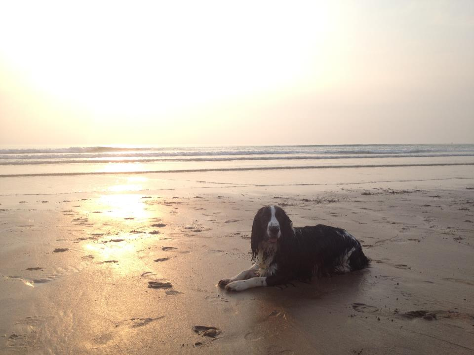

“It’s a pleasure to come back to a clean home and a very happy cat.”
Jools, Laura & Fernando - Croyde
Will has stayed in our home the last 4 years, for 4 weeks each year. Fernando and Will are now the best of friends and we are completely confident when leaving him to take care of our home and our adored cat.
Will has never let us down and is always sending us photos of Fernando having cuddles whilst we are away. Will also mows the grass for us and keeps the garden neat and tidy. It’s a pleasure to come back to a clean home and a very well looked after and happy cat. We will continue to use him.
Ellis, Zoe & Daisy -
Each year when we do a family holiday we have to ask friends to ’take in’ our beautiful black labrador. Thats all changed now though. We now get Will to live at our house and look after Daisy. He is absolutely great with her, takes her on lovely walks and she is always happy to see him.
“We wouldn’t hesitate in suggesting him to friends or family.”
Marion & Alfie - Berrynarbor
“Time for walkies!”